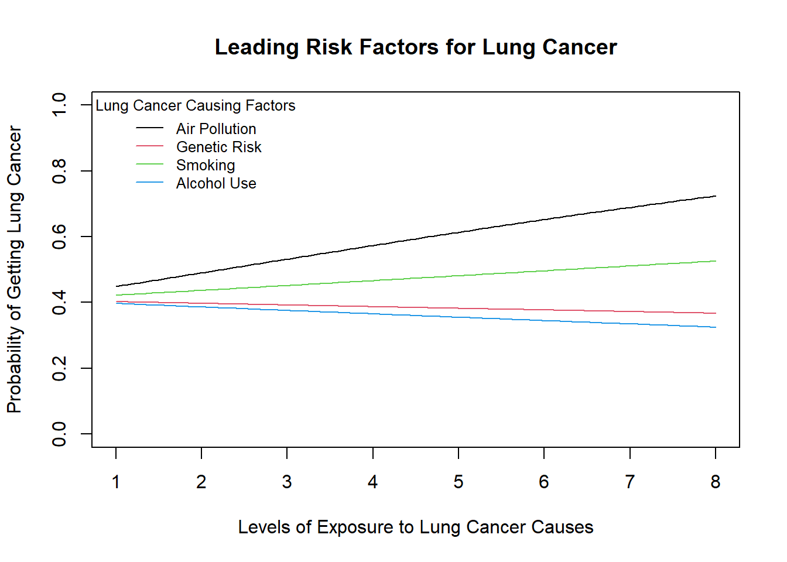

library(mosaic)
library(ResourceSelection)
library(tidyverse)
library(pander)
library(DT)
library(plotly)
library(ggplot2)
cancer <- read_csv("cancer.csv")
cancer <- cancer[1:300, ]
cancer<- cancer %>% select(c(Patient_Id,Age,Gender,Air_Pollution,Genetic_Risk,Smoking,Alcohol_use,cancer))
cancer$Air_Pollution<-as.numeric(cancer$Air_Pollution)
cancer$Genetic_Risk<-as.numeric(cancer$Genetic_Risk)
cancer$Smoking<-as.numeric(cancer$Smoking)
cancer$Alcohol_use<-as.numeric(cancer$Alcohol_use)
cancer$cancer<-as.numeric(cancer$cancer)
cancer$Gender<-as.factor(cancer$Gender)Lung cancer analysis

Conclusion from analysis
From the analysis, following the p-value’s given to us to know if each factor actually contributes to lung cancer,(p-value’s: 0.6713, 0.5063, 0.2223, 0.999) it shows us that they dont because we failed to reject the null hypothesis for each factor(all p-values > 0.05).But just like I said earlier its a small subset and doesn’t represent the general population. And then looking at the graph it tells us that out of each factor air pollution is the most likely factor to cause lung cancer as compared to the others.From the slope of the air pollution factor, we can see that the probability of getting lung cancer increases by a factor of 1.043176 for every one unit increase in air pollution exposure. Commonly most online sources would say that smoking will have a way higher probability out of all the other factors but from what we have it shows that air pollution surpasses it for this data set.Now because our p-value’s are not significant that means the result of this analysis are all by random chance.And so in order to get more reliable information on this it would be advised that more research and statistical analysis should be conducted to know more about the effects on this factors especially air pollution on lung cancer.
plot(1, type = "n", xlim = c(min(cancer$Air_Pollution), max(cancer$Air_Pollution)),
ylim = c(0, 1),
xlab = "Levels of Exposure to Lung Cancer Causes",
ylab = "Probability of Getting Lung Cancer",
main = "Leading Risk Factors for Lung Cancer")
curve(exp(-0.3725 + 0.1671*x) / (1 + exp(-0.3725 + 0.1671*x)), add = TRUE, col = palette()[1]) # Air Pollution
curve(exp(-0.3725 + -0.02135*x) / (1 + exp(-0.3725 + -0.02135*x)), add = TRUE, col = palette()[2]) # Genetic Risk
curve(exp(-0.3725 + 0.05965*x) / (1 + exp(-0.3725 + 0.05965*x)), add = TRUE, col = palette()[3]) # Smoking
curve(exp(-0.3725 + -0.04474*x) / (1 + exp(-0.3725 + -0.04474*x)), add = TRUE, col = palette()[4]) # Alcohol Use
legend("topleft", legend = c("Air Pollution", "Genetic Risk", "Smoking", "Alcohol Use"),
title = "Lung Cancer Causing Factors", col = palette(), lty = 1, bty = "n", cex = 0.8)
Now from the graph above we can see that the x-axis displays the levels from 1-8 indicating their perceived exposure to the risk factors not the actual because they were asked to give themselves the rating, with 1 meaning extremely low,2 meaning very low,3 meaning low,4 meaning fairly moderate,5 meaning moderate,6 meaning high,7 meaning very high and 8 meaning extremely high. And out of all the lung cancer causing factors the one that’s going to have the highest probability of actually causing the cancer would be air pollution, followed by smoking and then genetic risk before alcohol use.
Background
Lung cancer is among the leading causes of death in the world. It is influenced by many environmental and genetic factors. Some of the most common causes as of the 21st centuary according to john hopkins medicine are air pollution, genes, smoking, and alcohol in-take, which have been studied extensively as possible causes. This analysis wants to find out which of these factors is most closely linked to the chances of getting lung cancer. This study aims to find out the major cause. It will provide specific information for focused prevention plans and public health action.
Data
For this analysis we would be using the lung cancer prediction data set from kaggle. In the data we have over 300 people in which some have been diagnosed with lung cancer and some haven’t. The patients where then interviewed and medically tested to know how well they’ve been exposed to these cancer linked factors.They were then given a score on a scale of 1 to 10 based on their exposure level.In the group they were also assigned either a zero or a one indicating that they dont have lung cancer or they do. Below is a table with the data set. dataset info.
Hide
Show data
datatable(cancer)Analysis
In this analysis we are trying to know which of the four major causes of lung cancer has the highest probability of causing the illness and where the others rank next to it. In order to do this we would need to conduct a multiple logistics regression. For the hypothesis we want to know if these factors do indeed have an effect on a person causing cancer. we will do the hypothesis starting from air pollution and then genetic risk, smoking and finally alcohol use.We will use the slopes for the hypthesis testing because they show the relationship between the factors and the probability that a person does get lung cancer. \[ H_0: \beta_1 = 0 \text{ (air pollution has no effect)}\\ H_a: \beta_1 \neq 0 \text{ (air pollution has an effect)} \]
\[ H_0: \beta_2 = 0 \text{ (genetic risk has no effect)}\\ H_a: \beta_2 \neq 0 \text{ (genetic risk has an effect)} \]
\[ H_0: \beta_3 = 0 \text{ (smoking has no effect)}\\ H_a: \beta_3 \neq 0 \text{ (smoking has an effect)} \] \[ H_0: \beta_4 = 0 \text{ (alcohol use has no effect)}\\ H_a: \beta_4 \neq 0 \text{ (alcohol use has an effect)} \]
\[ α = 0.05 \]
As we can see the alternative hypothesis tells us that the slope for each factor can cause cancer if that slope is not equal to zero and the null tells us the exact opposite which is the factor will not cause cancer if its slope is equal to zero.and we have our alpha level of 0.05 that tells us if we can reject or fail to reject the null. For the model of the multiple logistic regression it is going to look exactly like the simple logistic but with more x values representing the different cancer causing factors. In the model pi stands for the probability and e for the error term. Below is the regression model and summary of the regression containing the intercept slopes and p-value’s.
\[ P(Y_i = 1|\, x_{i1},x_{i2},x_{i3},x_{i4}) = \frac{e^{\beta_0 + \beta_1 x_{i1} + \beta_2 x_{i2} + \beta_3 x_{i3} + \beta_4 x_{i4}}}{1+e^{\beta_0 + \beta_1 x_{i1} + \beta_2 x_{i2} + \beta_3 x_{i3} + \beta_4 x_{i4}}} = \pi_i \]
cnn.glm<-glm(cancer>0 ~ Air_Pollution + Genetic_Risk + Smoking + Alcohol_use,data=cancer,family=binomial)summary(cnn.glm)%>%pander()| Estimate | Std. Error | z value | Pr(>|z|) | |
|---|---|---|---|---|
| (Intercept) | 1.125 | 0.3536 | 3.183 | 0.00146 |
| Air_Pollution | 0.04227 | 0.0996 | 0.4244 | 0.6713 |
| Genetic_Risk | -0.08541 | 0.1285 | -0.6646 | 0.5063 |
| Smoking | 0.08286 | 0.06789 | 1.221 | 0.2223 |
| Alcohol_use | 0.0001368 | 0.1128 | 0.001213 | 0.999 |
(Dispersion parameter for binomial family taken to be 1 )
| Null deviance: | 323.6 on 299 degrees of freedom |
| Residual deviance: | 321.6 on 295 degrees of freedom |
from the summary we can see the y-intercept and the slopes from each factor,and from the p-values we can see that none of the factors from this analysis is significant. Please note that this doesn’t mean that these factors don’t contribute to lung cancer, because this data set doesn’t represent the world population but only a really small portion of it.
And to test for the goodness of fit for this logistic regression we can do the Hosmer-Lemeshow test.The null assumes the logistic regression is a good fit. As shown below, there is insufficient evidence to reject the null (p=0.9164) so we will conclude a good logistic fit on these data.
hoslem.test(cnn.glm$y, cnn.glm$fitted) %>% pander(caption="Hosmer-Lemeshow Goodness-of-Fit Test")| Test statistic | df | P value |
|---|---|---|
| 3.269 | 8 | 0.9164 |
Analysis
For this analysis we are trying to know if age and coffee type are independent or associated and if they are associated what they exact correlation would be. We would now be conducting a hypothesis test to know if they are independent or not.
\[ H_0: \text{Age and coffee type are independent}. \]
\[ H_0: \text{Age and coffee type are not independent(associated)}. \] \[ \alpha = 0.05 \]